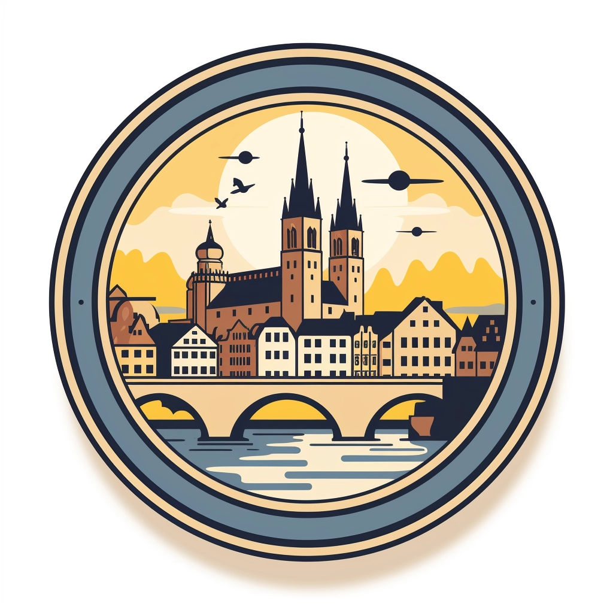

<!DOCTYPE html>
<html lang="en">
<head>
    <meta charset="UTF-8">
    <meta name="viewport" content="width=device-width, initial-scale=1.0">
    <link rel="stylesheet" href="https://unpkg.com/leaflet@1.7.1/dist/leaflet.css" />
    <script src="https://unpkg.com/leaflet@1.7.1/dist/leaflet.js"></script>
    <title>Interaktive Stadtkarte</title>
    <style>

html, body {
    height: 100%;
    margin: 0;
}
        #map {
            width: 100%;
            height: 100%;
        }
    </style>
</head>
<body>
    <div id="map"></div>
    <script>
        
        var corner1 = L.latLng(49.1462, 9.2186);
        var corner2 = L.latLng(49.1397, 9.2150);
        var corner3 = L.latLng(49.13997, 9.2211);
        var corner4 = L.latLng(49.1462, 9.2233);

        var paddingCorner2 = L.latLng(49.1397 - 0.001, 9.2150 - 0.002);
        var paddingCorner4 = L.latLng(49.1462 + 0.001, 9.2233 + 0.002);

        
        var map = L.map('map', {
            maxBounds: L.latLngBounds(paddingCorner2, paddingCorner4),
            maxBoundsViscosity: 0.3,
        }).fitBounds(L.latLngBounds(corner1, corner4));

        
        L.tileLayer('https://{s}.tile.openstreetmap.org/{z}/{x}/{y}.png', {
            attribution: '&copy; <a href="https://www.openstreetmap.org/copyright">OpenStreetMap</a> contributors'
        }).addTo(map);

        
        var cornersLine = L.polyline([corner1, corner2, corner3, corner4, corner1], { color: 'red' }).addTo(map);

        

        L.marker([49.14197, 9.218472]).addTo(map).bindPopup(`
            <div style="display: flex; justify-content: space-between; align-items: flex-start;">
                <div>
                    <b>Verkehrsunternehmen</b><br>
                    <p>Integration von öffentlichen Verkehrsmitteln in ein gut funktionierendes Gesamtsystem der Mobilitätswende.</p><br>
                    <p>Sicherstellung einer effizienten und attraktiven Mobilitätsinfrastruktur für die Bevölkerung Heilbronns.</p><br>
                </div>
                <div style="height: 300px; width: auto;">
                    
                </div>
            </div>
        `, {maxWidth: 'auto'});
        L.marker([49.14244, 9.218417]).addTo(map).bindPopup(`
            <b>Stadt Heilbronn</b><br>
            
            <p>
                Verbesserung des Images und der Attraktivität der Innenstadt als lebenswerter und nachhaltiger Ort
            </p><br>
            <p>
                Reduzierung von Verkehrsstaus und Umweltbelastungen durch eine intelligente Verkehrsplanung
            </p><br>
            <p>
                Förderung von Wirtschaftswachstum und lokale Entwicklung durch eine lebendige Innenstadt
            </p><br>
        `);
        L.marker([49.144167, 9.218556]).addTo(map).bindPopup(`
            <b>Innenstadtbewohner</b><br>
            <br>
            <p>Reduzierung von Lärm- und Luftverschmutzung für eine bessere Lebensqualität</p><br>
            <p>Verbesserter Zugang zu Grünflächen und Freizeitaktivitäten in der Innenstadt</p><br>
            <p>Bequemlichkeit und Effizienz bei der täglichen Mobilität innerhalb der Stadt</p><br>
            <p>Sicherheit im Verkehr für Fußgänger und Radfahrer</p><br>
        `);
        L.marker([49.145417, 9.220833]).addTo(map).bindPopup(`
            <b>Unternehmen</b><br>
            <br>
            <p>Lebendige und attraktive Innenstadt zur Steigerung der Kundenfrequenz</p><br>
            <p>Erhöhte Sichtbarkeit und Erreichbarkeit für potenzielle Kunden</p><br>
            <p>Zugang zu einer gut vernetzten und effizienten Logistikinfrastruktur</p><br>
        `);

    </script>
</body>
</html>
